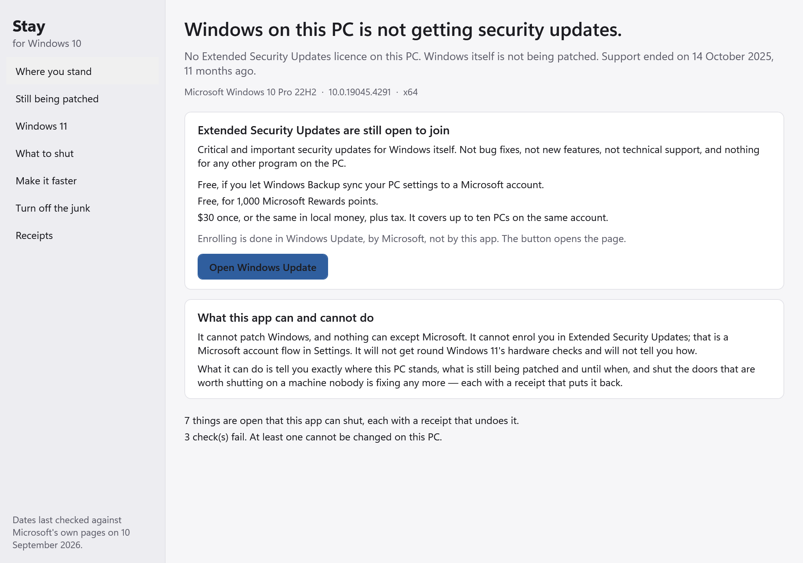
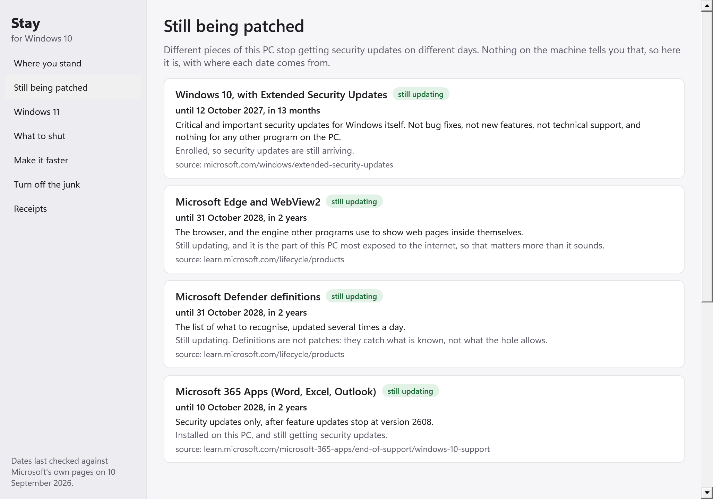
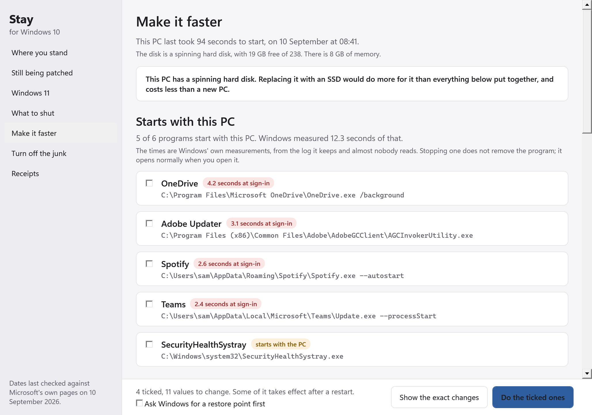

Windows 10 stopped being supported.
Your PC will not tell you where that leaves it.
Are you enrolled in Extended Security Updates? Is that enrolment actually delivering anything? What on this machine is still being patched regardless? Can it take Windows 11, and if not, is that a setting you can change in ten minutes or does it mean a new PC? Stay answers all of it on one screen.
Download for Windows 10 Free. Open source. One exe, no installer, no account, no cloud. 64-bit Intel/AMD or ARM.

Entitled is not the same as receiving
Being entitled to updates and actually getting them are two different things, and they come apart far more often than anybody expects. An ESU enrolment that quietly stopped delivering is worse than none at all, because you believe you are covered.
So Stay reads what actually happened rather than what should have: the day an update really installed, from Windows' own record of its own fixes. A restart that has been waiting for weeks — a security fix installed and protecting nothing. An update service switched off years ago by a tuning guide somebody followed. Whether anything is watching for malware, how old its definitions are, whether the firewall is on.
Enrolled in Extended Security Updates, but the last update landed 7 months ago.
That is a sentence somebody needs to see, and nothing in Windows will say it.
It shows its working, and it will say it does not know
Whether you are enrolled is read from two independent things: the licences Windows holds, and whether anything has installed since support ended, which an unenrolled PC cannot get. When they agree, Stay says so and says why. When they disagree it says two things about this PC disagree, so it will not guess, and shows you both. Telling somebody who is enrolled that they are not is the worst mistake it could make: they pay twice, or give up on a machine that was fine.

What an old PC actually needs
Still being patched
It is not all one date. Edge and WebView2 to October 2028, Defender's definitions to October 2028, Microsoft 365 Apps to October 2028, Windows itself only with ESU. Your browser too — and since nearly everything that gets onto a PC arrives through the browser, on an unpatched OS that matters more than anything else here. It is still being updated.Windows 11
Whether this PC can take it and which check fails. A TPM switched off in firmware is ten minutes in the BIOS; a processor that is not on the list is a new PC. Knowing which is the whole question. It will not get around the checks and will not tell you how.Make it faster
Windows times its own start, and times the programs holding it up, in a log almost nobody knows exists. This PC last took 94 seconds to start. OneDrive cost 4.2 of them. Task Manager says "High"; Stay says the number.Turn off the junk
The advertising, the AI hooks, the telemetry, the noise, and the bundled apps nobody asked for. Eight switches are left out because they are Windows 11 features Windows 10 never had, and it says how many and why rather than writing values that do nothing.
What turned itself back on
Windows restores its own defaults when it updates itself and does not mention it. No debloat tool tells you, because none of them keep a record of what you switched off six months ago. Stay's receipts are that record, so it can check every value it ever set and tell you what has come back.
Every change on a receipt that undoes it
Every change is written down first, with the value each thing had before, and one button puts any of it back. Removing a bundled app is the only thing here a receipt cannot undo — and Stay says exactly that before the button, not after, keeping a Store link for each one.
Honest limits
It cannot patch Windows, and nothing can except Microsoft. It cannot enrol you in ESU; that is a Microsoft account flow in Settings, so it takes you to the right page and tells you what you will be asked. It will not get around Windows 11's hardware checks and will not tell you how. It does not make Windows 10 fast — if the PC has a spinning hard disk it says so first, and says an SSD would do more for it than everything in the app put together. And it has been tested against a real registry, a real event log and a real package list, and against 256 of its own checks, but not yet on a real Windows 10 PC: Windows 10 for ARM was never released and this was built on an M3. If you run it on real Windows 10, the issues page is where to say what happened.
No account, no cloud, no telemetry. The only network request is a daily check with GitHub for a newer version, which sends no identifier and which you can turn off. MIT licensed, built by Keith Adler. More from the same maker: keithadler.github.io.